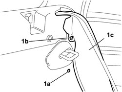
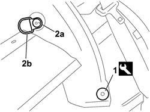
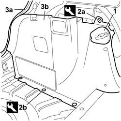

7040B18 LOAD COMPARTMENT LOAD PLATFORM SIDE TRIM ONE LH OR RH - R.R
- Path
- Procedures > 70 FITTINGS > 7040 BODY INTERIOR FITTINGS AND TRIM > 7040B LUGGAGE COMPARTMENT AND LOAD PLATFORM TRIMS > 7040B18 LOAD COMPARTMENT LOAD PLATFORM SIDE TRIM ONE LH OR RH - R.R
- Kind
- repair procedure (removal / refitting; the operation number is the code)
- Applies to
- all engines; all production periods
- Interactive page
- https://sloeber94.github.io/elrnDB-fCrm/en/#/194001033
Applies to: all engines; all production periods
 Removing
Removing
 Refitting
Refitting- Open the rear tailgate.
- Turn the ignition key to the OFF position.
- Disconnect the negative and positive battery terminals.
Description | Connector | |
|---|---|---|
BATTERY |
Op. 7040B42 PROTECTION GRILLE FOR ANIMAL TRANSPORT - R and R
Op. 7040B26 LOAD PLATFORM COVER BLIND - R+R
Op. 7050A20 ONE-PIECE REAR SEAT CUSHION - R.R.
- Lower the rear seat backrest.
1. Working on the side of the vehicle concerned, undo the fixing bolts (1a) and (1b) and carefully detach the electrical connection for the side panel (1c) without disconnecting it from the rear seat.

Applies to: all engines; all production periods
Op. 7040B10 LOAD PLATFORM (LUGGAGE PLATFORM) TRIM - R+R
Op. 7040B22 LUGGAGE COMPARTMENT/LOAD PLATFORM MOULDING - R+R
Op. 7040G46 LOAD COMPARTMENT COURTESY LIGHT - R and R
Op. 7040B24 LOAD COMPARTMENT TOP TRIM (ONE) - R+R
1. Using the special tool, release the front stud retaining the side trim.
Tool | Description | Function | Validity |
|---|---|---|---|
1878077000 | Knife | Retainer removal |
2. Undo the fixing bolts (2a) and remove the mounting hook (2b).

Applies to: all engines; all production periods
1. Using a suitable size screwdriver, working on the special slot, release and remove the trim from the rear backrest striker.
2. Using the special tool, release the retaining button (2a) and the three retaining studs (2b).
Tool | Description | Function | Validity |
|---|---|---|---|
1878077000 | Knife | Retainer removal |
3. Partly release the seal (3a) for the tailgate and remove the side trim (3b).

Applies to: all engines; all production periods
Refitting
Removing- Check that the side trim is not damaged.
- Position the side trim correctly in its housing.
- Secure it using the three studs and the retaining button.
- Position the hook and tighten the fixing bolt.
Op. 7040B24 LOAD COMPARTMENT TOP TRIM (ONE) - R+R
Op. 7040G46 LOAD COMPARTMENT COURTESY LIGHT - R and R
Op. 7040B22 LUGGAGE COMPARTMENT/LOAD PLATFORM MOULDING - R+R
Op. 7040B10 LOAD PLATFORM (LUGGAGE PLATFORM) TRIM - R+R
- Working on the side of the vehicle concerned, carefully reposition the side panels in their housing and tighten the fixing bolts.
Op. 7050A20 ONE-PIECE REAR SEAT CUSHION - R.R.
- Reposition the rear seat backrest.
Op. 7040B26 LOAD PLATFORM COVER BLIND - R+R
Op. 7040B42 PROTECTION GRILLE FOR ANIMAL TRANSPORT - R and R
- Reconnect the negative and positive battery terminals.
Description | Connector | |
|---|---|---|
BATTERY |
- Close the rear tailgate.
Topics linked from this page (8)
- 7040B10 LOAD PLATFORM (LUGGAGE PLATFORM) TRIM - R+R
- 7040B22 LUGGAGE COMPARTMENT/LOAD PLATFORM MOULDING - R+R
- 7040B24 LOAD COMPARTMENT TOP TRIM (ONE) - R+R
- 7040B26 LOAD PLATFORM COVER BLIND - R+R
- 7040B42 <x>PROTECTION GRILLE FOR ANIMAL TRANSPORT - R&R</x>
- 7040G46 <x>LOAD COMPARTMENT COURTESY LIGHT - R&R</x>
- 7050A20 ONE-PIECE REAR SEAT CUSHION - R.R.
- A001 BATTERY
Topics that link to this page (8)
- 5010C60 LH OR RH REAR AIR OUTLET VENT (ONE) - R.R
- 5505A14 SUPPLEMENTARY JUNCTION BOX IN LUGGAGE COMPARTMENT - R.R
- 5505C41 PASSENGER COMPARTMENT WIRING - R.R
- 5570T70 PAGER/COMPACT DISC WIRING HARNESS - R&R OR REPLACE
- 5570T95 SUBWOOFER WITH AMPLIFIER BUILT INTO SOUND SYSTEM - R.R.
- 5580H10 PARKING OBSTACLE DETECTION DEVICE ELECTRONIC CONTROL UNIT - R.R.
- 7210B82 R.R REAR CROSSMEMBER
- 7210E66 R.R. REAR BUMPER